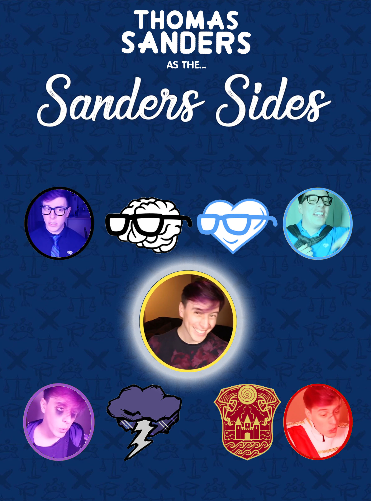

Sanders Sides
What is it about?
Sanders Sides is a web series starring Thomas Sanders and written by Sanders and Joan S.
On the series, Thomas projects the different aspects of his personality into four main characters called the Sanders Sides.
With them, Thomas has conversations where he analyzes the various inner conflicts or dilemmas he goes through in his life and tries to find solutions for them.

Where you can watch it:
- Youtube Main Channel (Thomas Sanders)
This is where all the episodes are uploaded, as well as a playlist where you can watch all episodes in chronological order.
- Youtube Second Channel (Thomas Sanders and Friends)
This is where the behind the scenes and bloopers from the episodes uploaded on the main channel as well unscriped conetent.
- Tik Tok
This is where some of the off the cuff content about the sides is uploaded, that does not heavily connect to the main story